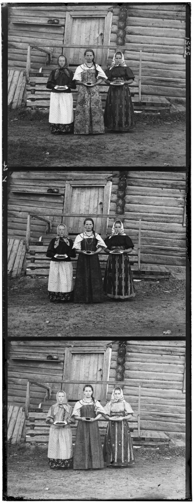
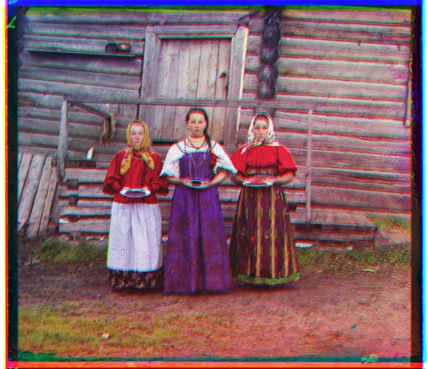
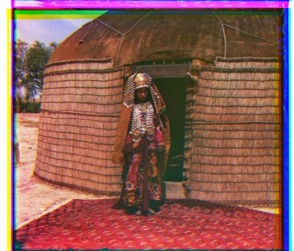
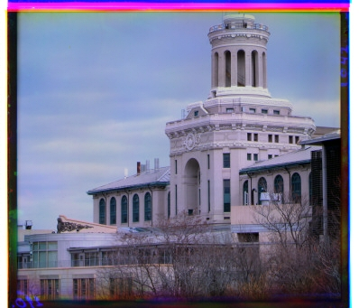

In this project, I colorized images from the Prokudin-Gorskii glass plate images set. This involved finding the correct alignment of red, green, and blue plates. To find the correct offsets, I matched the green and red plates with the blue plate. ## Algorithm
For this project, I maximied the cross correlation of the two images. This means I took the dot product of the two images after subtracting the mean pixel value from every pixel. Naively, I first maximized the cross correlation by offsetting the red and blue plates from \(-15\) to \(15\) then keeping the offsets that maximize the cross correlation. In order to minimize the effects of edge distortion, I only used the cross corrlation of the middle quarter of the image. ## Gaussian Pyramid
In order to use this method for larger images, I used a gaussian pyramid to speed up matching. First I applied a gaussian blur kernel with \(\sigma = 1\) to the image, and then threw away all of the odd rows and columns. This is repeated until the image is less than \(32\) wide. Then, the matching technique from above is applied. Recursively, we double the resulting offset, and then find the cross correlation for that offset, and the 8 offsets immediately around it for the next image sized up. We find the maximum, and use that offset for the next stage until the offset for the full sized image is reached.
In order to match some of the more complicated inputs such as emir or melons, using the raw images in the cross correlation is not sufficient. This is because some of the channels are brighter than other in some parts of the image. I wanted to have the model try to match the shapes of the images rather than the textures, so I decided to use a sobel edge detected first. The sobel edge detector are the following convolutions: \[\begin{pmatrix}
-1 & 0 & 1\\
-2 & 0 & 2\\
-1 & 0 & 1
\end{pmatrix}\] and \[\begin{pmatrix}
-1 & -2 & -1\\
0 & 0 & 0 \\
1 & 2 & 1
\end{pmatrix}\] The resulting values after the convolution are squa red and added together to form the final image with the edge detector. Here is an image of the regular blue channel of the melon image super imposed with the sobel edge detection of the red and yellow filters.
We can see that the edge detector uses the edges as features instead of the interior of shapes in the image, as desi red.
We can see the results of the sample images and a few extra images below. We can see that the algorithm has successfully aligned all of the images.
| Original | Colo red | Offset |
|---|---|---|
 |
 |
green offset: (5,2) red offset: (12,4) |
 |
 |
green offset: (49,24) red offset: (107,41) |
 |
 |
green offset: (60,18) red offset: (124,14) |
| green offset: (41,17) red offset: (90,24) | ||
 |
 |
green offset: (54,8) red offset: (115,14) |
 |
 |
green offset: (80,10) red offset: (176,14) |
 |
 |
green offset: (-4,2) red offset: (4,2) |
 |
 |
green offset: (51,27) red offset: (107,46) |
 |
 |
green offset: (78,29) red offset: (175,47) |
 |
 |
green offset: (52,12) red offset: (110,9) |
 |
 |
green offset: (4,4) red offset: (7,4) |
 |
 |
green offset: (42,2) red offset: (86,40) |
 |
 |
green offset: (65,11) red offset: (147,21) |
 |
 |
green offset: (54,-1) red offset: (106,-14) |
|  |  | green offset: (-2,1) red offset: (-1,3) |
 |
 | green offset: (6,7) red offset: (13,10) |
 |
 | green offset: (8,0) red offset: (13,0) |